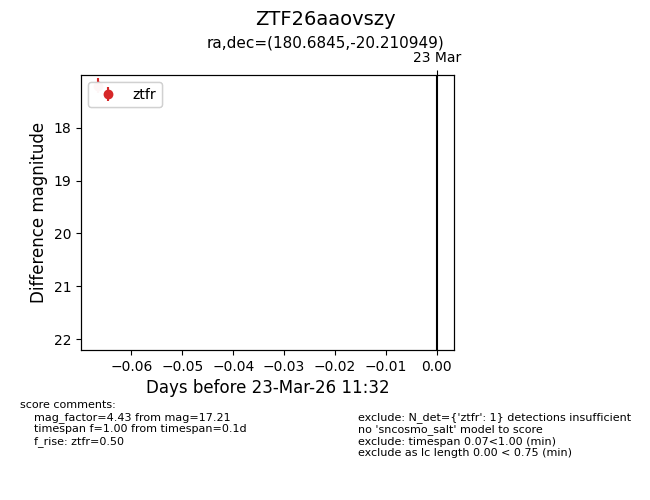
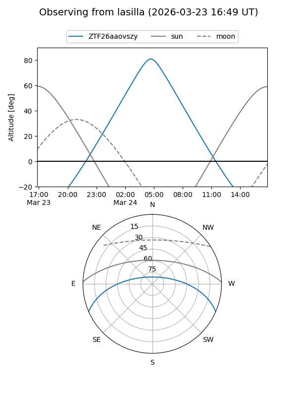
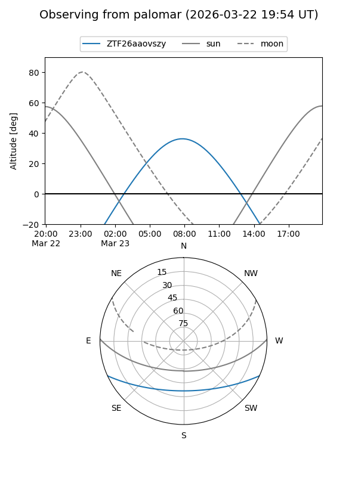

ZTF26aaovszy
Target ZTF26aaovszy at 2026-03-23 11:34
Aliases and brokers:
FINK: link
Lasair: link
ALeRCE: link
alt names
ZTF26aaovszy (ztf,fink_ztf)
Coordinates:
equatorial (ra, dec) = 180.6845,-20.21095
equatorial (HMS+DMS) = 12:02:44.28,-20:12:39.42
galactic (l, b) = (287.6783,+41.21388)
Flags:
Photometry:
last ztfr=17.21
1 ztfr detections
Lightcurve

Visibility


Additional plots